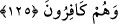
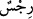
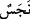

Bu şekilde îmanın artması, Hz. Peygamber (a.s.)’ın zamanına mahsustur. Şimdi ise
kabul edilen görüşe göre iman ne artar ne de eksilir. Yalnızca îmânın dereceleri kuvvet
ve zayıflık yönünden farklılık arzeder. Çünkü bir şeyi uzaktan gören kimse yakından
gören gibi değildir. Genel olarak bilen kimse ayrıntılı olarak bilen gibi olamaz.
İmanın sûreti, icmâlî ve tafsîlî olarak kalb ile tasdiktir. İmanın hakikati ise ihsandır.
“İhsan ise Allah’a, sanki O’nu görüyormuşsun gibi ibâdet etmendir. Her ne kadar sen
onu görmesen de O seni görür.”[336] İhsân’ın hakîkati ise “Ben onun kulağı ve gözü
olurum.”[337] mertebesidir ki bu mertebe, nâfilelerle elde edilen yakınlıktır. Onun
üstünde farzlarla elde edilen yakınlık mertebesi vardır ki buna “Semiallâhu limen
hamideh (Allah kendisine hamdeden kimseyi işitir.)” sözüyle işaret edilmektedir.
Hâsılı Kâbe’ye inanan kimse onu uzaktan gördüğü zaman yakîni artar. Sonra ona
yaklaştığı zaman kemâle erer. Ardından içine girdiği zaman kemâli artar. Dolayısıyla
itikadın özünde aslında farklılık olmaz. Keyfiyetinde olur.
125. Kalplerinde hastalık olanlara gelince (bu), onların pisliklerine pislik katar. Ve
onlar kâfir olarak ölürler.
“Kalplerinde hastalık” küfür ve kötü akîde “olanlara gelince” bu, “onların
pisliklerine pislik katar” kalplerindeki küfre ilave yeni küfür, bâtıl akîde ve kötü
huylar katar. Bu durum, onlar o hal üzere ölene kadar yerleşip kuvvetlenir.
Haddâdî der ki: “Allah âyette nifakı hastalık olarak isimlendirmiştir. Çünkü ağrı/sızı
bedenin hastalığı olduğu gibi kalpteki tereddüt ve şaşkınlık da kalbin hastalığıdır.
Fakir (Bursevî) der ki: “Bunların ikisi de (yani gerek kalbin gerekse bedenin
hastalığı) insanı helake götürür. Zâhirî hastalık, bedenin helak olmasına götürür. Bâtınî
hastalık ise rûhun helâkine götürür. Öyleyse bunlardan her birinin kendisine uygun bir
usulle tedavi edilmesi gerekir.
Âyette geçen “  (pislik)” kelimesi ile yine pislik anlamına gelen “” kelimesi
arasındaki fark şudur: “Rics” daha çok aklın pis ve murdar gördüğü şeylerde, “neces”
ise daha çok insan tabiatının pis ve murdar saydığı şeylerde kullanılır.
“ve onlar kâfir olarak ölürler.” Yani bu hal onlar ölünceye kadar devam eder. Allah
Teâlâ bu âyette, gökten bir sûrenin inmesiyle müminler için iki şeyin hasıl olduğunu
beyan etmiştir: İmanın artması ve sevinme. Bu iki şeye mukabil münâfıklar için de iki
şeyin hasıl olduğunu beyan etmiştir. Onlar da pisliklerinin artması ve küfür üzere ölüm.
Bir hadiste şöyle buyurulmuştur: “Allah, bu kitap sayesinde nice kavimleri yükseltir,
nicelerini de alçaltır.”[338] Yani kim Kur’ân’a iman eder, onun şânına ta’zim gösterir ve
onunla amel ederse Allah onun âhiretteki derecesini yükseltir ve ona izzet ve şeref ihsan